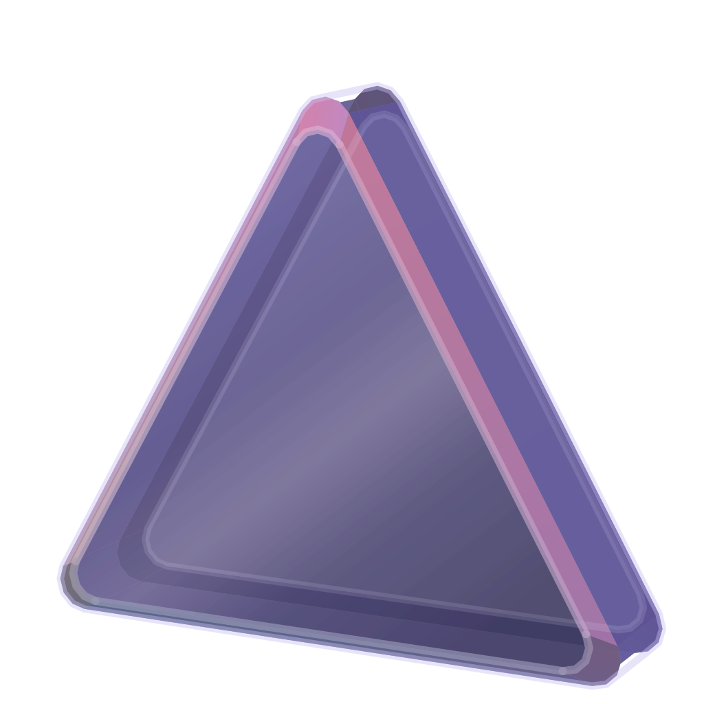

Opening Spectra
Spectra can’t reach the internet. Your folders keep syncing on this computer, and Spectra opens as soon as you’re back online.

Spectra can’t reach the internet. Your folders keep syncing on this computer, and Spectra opens as soon as you’re back online.